La Géorgie, le Pays Basque, la Russie, la Nouvelle Aquitaine…
Eh oui, comme l’on sait la réalité dépasse souvent la fiction.
Pourtant, dans le cas précis il serait judicieux de commencer justement par la fiction en nous détachant pour le moment des récentes tensions entre la Géorgie et la Russie.
En 2007 sortait un film (production géorgienne de qualité artistique discutable) « Le Svane »
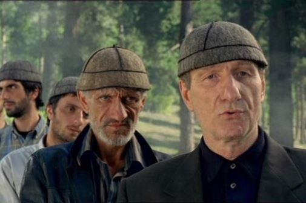La Svanétie, région perdue dans les Hautes Montagnes de la Géorgie du Nord-Ouest est peuplée d’une tribu légendaire des Svanes, dont l’ADN serait un mélange de ceux des Tchétchènes, des Abazins et des Darguins. La peuplade est constituée par « maisons » autour d’un prince. Type de société est quasi féodal.
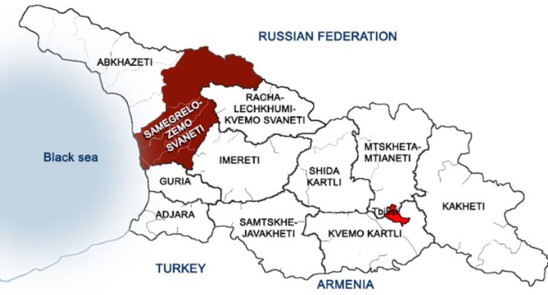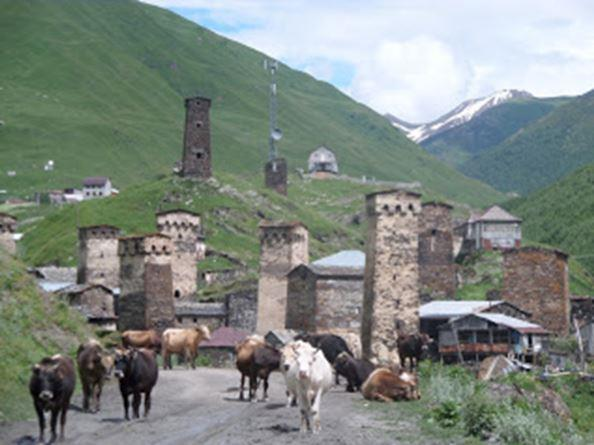Ne souhaitant surtout pas me livrer ici à une sorte de conférence ethno-sociétale, je laisse aux plus curieux le soin de fouiller plus profondément, voire à visiter ce coin si plein de mystères et de dangers diffus. PI : le régime sans visa est actuellement en vigueur entre l’UE et le Géorgie.
En deux mots, les Svanes sont réputés par la pratique ancestrale d’une sorte de vendetta, qui veut que toute la descendance masculine, nourrissons compris, de l’offenseur, soit exterminée jusqu’à l’extinction totale de la famille.
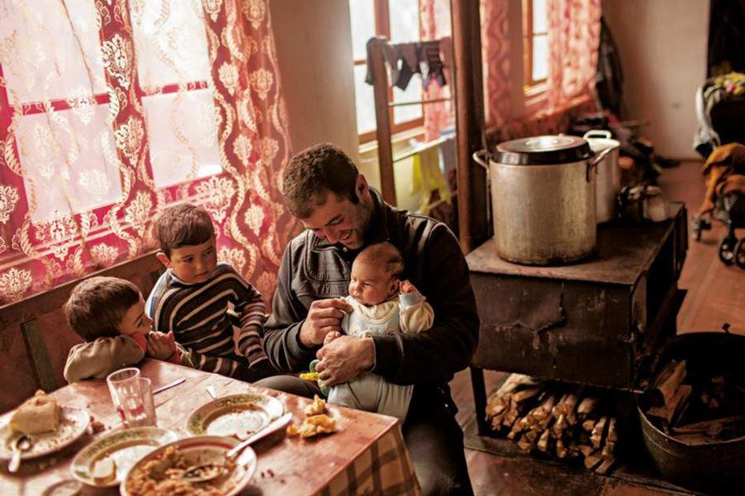
… et nous voilà en Nouvelle Aquitaine
Août 2019, la Creuse, une ville de moyenne importance dans le Limousin. - Le lecteur devinera aisément l’immense joie qu’éprouve l’agriculteur berrichon ou creusois buveur du Pinot se sachant rattaché à l’ostréiculteur arcachonnais inconditionnel du Crémant et autres Bordeaux blanc secs.
Enfin… Paris sera toujours Paris.
Qu’importe que Guéret ne soit plus Guéret.
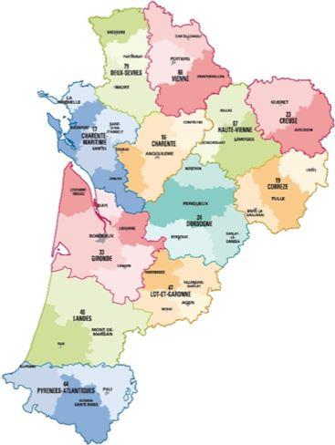
Et nous voici au Pays Basque
Ayant eu dans ma vie une chance unique d’avoir été admise dans une des chorales basques de Bayonne, strictement réservées aux hommes, j’ai pu constater une sidérante similitude culturelle et linguistique entre les Basques et les Géorgiens : même danse sur les pointes, même chant debout autours d’une longue table en bois un verre du rouge à la main et puis - la langue…
Pour des raisons bien compréhensibles je n’ai pas pris de photos ni vidéo de cette soirée.
Actuellement, j’ai beau chercher sur Internet les photos des danses et chants basques lors des réunions des chorales masculines – je ne trouve rien.
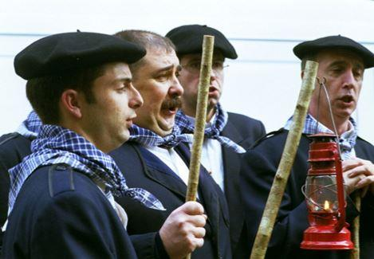Beaucoup de Français savent que les origines de la langue Basque sont couvertes de mystère, mais rares sont ceux, qui savent que le Basque et le « Géorgien » (je mets entre guillemets, car le « Géorgien » regorge de dialectes) – sont issus de la même racine linguistique. A ma connaissance aucun linguiste n’a été capable de percer le mystère d’une telle migration.
Les Basques, eux, sont parfaitement au courant de ce phénomène stupéfiant.
Il s’avère que les Géorgiens le sont aussi.
Et nous voilà dans le Limousin
La Souterraine, Place du Marché, un samedi.
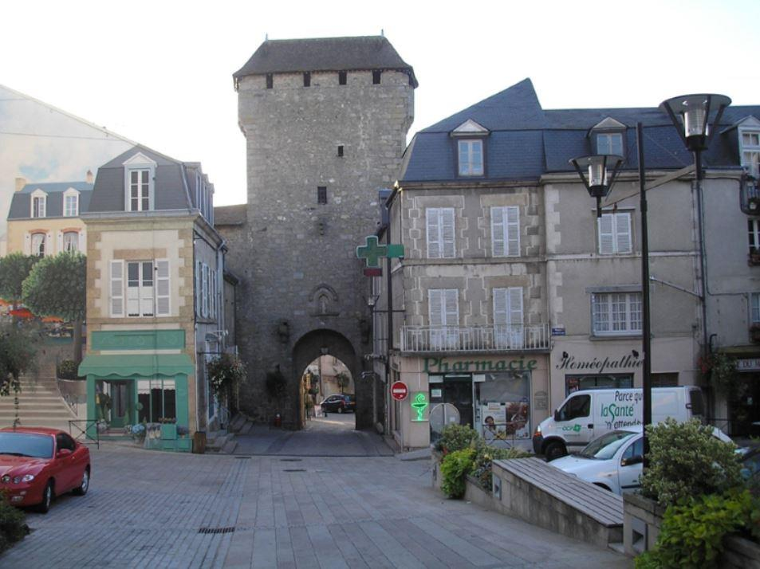Ils marchent devant moi, deux familles apparemment.
Curieux, je n’arrive pas à identifier la langue et pourtant je sens quelque chose de familier, de très familier, connu depuis ma jeunesse. Je m’adresse à eux en anglais – ils ne parlent pas l’anglais ; je poursuis en français – non plus. Et puis j’entends quelque chose comme « rouss ».
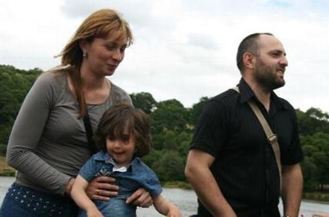– Et là, j’y suis ! Ils sont Géorgiens ! Je me lance en russe, je sais que les Géorgiens de leur génération parlent impérativement le russe.
Grand Dieu ! Ils ont peur. Ils ont peur de moi car je suis Russe. Ils font semblant de ne pas me comprendre. Je leur laisse mes coordonnées sans demander les leurs et le lendemain nous les amenons chez nous. Une fois dans ma maison, mis en confiance, ils se mettent à causer russe sans le moindre problème, même les enfants.
Et nous voilà à Tbilissi
La famille prétend avoir été aisée en Géorgie, 2 000 € / mois pour 2 adultes.
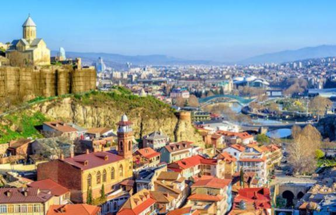Le père de la famille entame une relation extraconjugale, à Tbilissi même, avec une jeune femme Svane. Celle-ci tombe enceinte et exige que son amoureux quitte sa femme et l’épouse.
Ayant essuyé un refus, le jeune Svane se suicide.
La famille Svane de la défunte déclare la vendetta à la famille de l’offenseur.
« Mes » géorgiens démissionnent de leurs postes respectifs, partent « en vacances » en Espagne, se retrouvent à Bordeaux et demandent l’asile. Bordeaux (la Nouvelle Aquitaine oblige) envoie la famille illico dans le Limousin.
Et nous voici de retour dans le Limousin
La France recevait en 2018 environ 1 000 demandes d’Asile de la part des citoyens de la Géorgie par MOIS. Je n’ai pas encore les stats 2019.
La famille, comprenant 2 enfants mineurs, est hébergée dans des conditions plus qu’acceptables au CADA (Centre d’Accueil des Demandeurs d’Asile). La scolarisation des enfants est assurée. Les soins médicaux sont totalement gratuits, y compris les interventions coûteuses pour la maladie du père de la famille. Les réductions pour les transports, y compris les TER et les grandes distances avoisinent 90 %. Les repas sont gratuits pour toute la famille dans les cantines spécialisées. La famille touche une allocation de 560 € / mois. L’accès Internet, télé, photocopieuse, fournitures sont gratuits. Et j’en passe. Avocat commis d’office, bien évidemment.
La famille fait venir en France la grand-mère et l’amène allégrement visiter Paris.
Sur FB la mère publie les vidéos des fêtes et autres barbecues dans le Limousin avec un émoi « heureuse à…[nom de la ville]» ainsi que des photos de la famille en visite à Paris.
Très futée, la famille demandant l’Asile en France pour être recherchée en Géorgie dans le cadre d’une vengeance de sang - en Géorgie actuelle dont la famille dit elle-même que ce pays est corrompu et fliqué à mort dans tous les domaines sociétaux et politiques, et ceci à tous les niveaux.
Ils doivent libérer leur logement prochainement, leur demande d’asile ayant été rejetée par le CNDA (Conseil National pour les Demandeurs d’Asile).
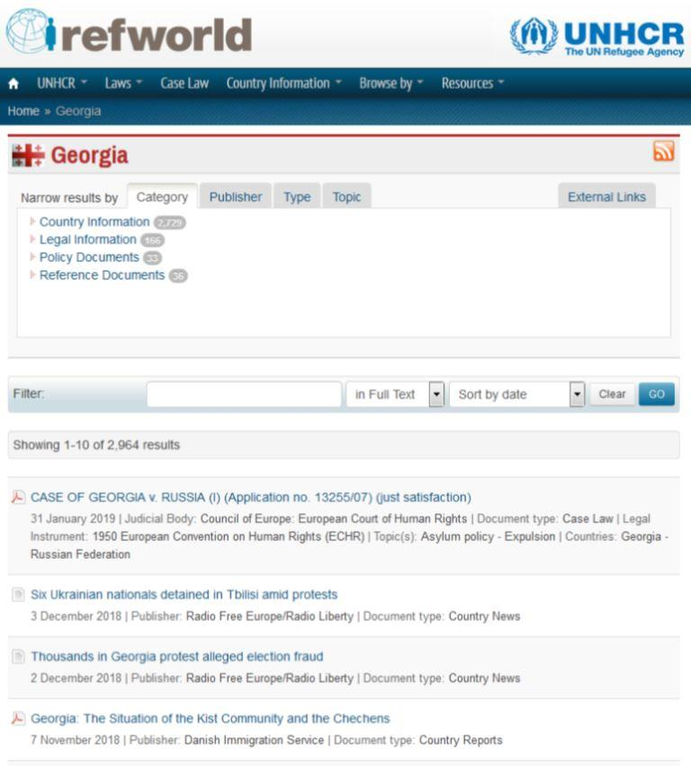En étudiant leur dossier je suis tombée sur https://www.refworld.org/country/GEO.html. Comme vous pouvez constater, le Canada ouvre large ses bras à tout ce qui ressort des pays russophobes.
Sans surprise.
Je me suis occupée de leur cas pendant mes vacances, à titre strictement privé. En effet, du fait de mon métier actuel je possède toutes les compétences nécessaires pour intervenir dans des cas pareils.
Je laisse à l’éventuel lecteur le soin de forger son opinion sur ce nouveau type de migrations en provenance des pays de l’ex-CEE.
J’ai constitué la mienne – à force de discussions avec les intéressés, réflexions, recherches, contacts avec moult avocats et institutions et avis des amis (ci-dessous, les noms sont masqués, traduit du russe par moi).
А от кого они убегают, если не секрет? Из маленькой гордой "демократической" "европейской" страны?
Et que fuient-ils, si ce n’est pas un secret ? Leur petit et fier pays, « démocratique » et « européen » ?
Грузины из Грузии, украинцы из Украины, кошмар все длится и длится! Боюсь, что лет через 100 эти, да и многие другие постсоветские республики перестанут существать, как самостоятельные страны. Обидно и больно!
Des Géorgiens de la Géorgie, des Ukrainiens de l’Ukraine, ce cauchemar ne s’arrêtera-t-il donc jamais ? J’ai bien peur que d’ici 100 ans ces et d’autres républiques post-soviétiques cesseront leur existence en tant que pays indépendants. Ça fait mal au cœur, c’est humiliant à la fin !
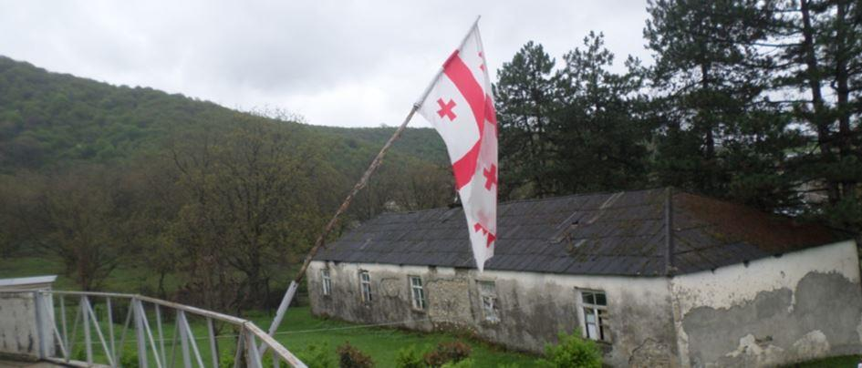
В 14-м году, осенью, одна моя знакомая армянка, торговавшая нелегальными сигаретами и жившая вместе с мамой и дочкой на полном обеспечении (в том числе медицинском) в центре нашего су-префектурного города, видя меня почти все-время в слезах (события на Украине меня просто подкосили) говорит мне: "Ой, приехали сюда беженцы с Украины, просят полит.убежища, бедные, они так пострадали" и т.д. и т. п... "Откуда?", спрашиваю я . " Харьков", - говорит. И продолжает. "У них там столько всего было, им все разрушили, их чуть не убили". Моя реакция, мол, Харьков, значит "про-русские", а значит не дадут им полит. убежища, ведь Франция поддержала гос.переворот. Короче, рассказываю мужу, готова была за ними поехать и привезти к себе. Прошу их телефон, но в ответ какая-то непонятная реакция, мол у них телефона нет, живут в больнице (?), должны потерпеть и никуда не уходить. Обещает в следущий раз, когда их увидит, позвонить мне. Прошло некоторое время, месяц или два, звонит мне как-то моя армянка и передают им трубку, а оттуда такой акцент !... Саакашвили отдыхает )) Я остолбенела от неожиданного. Якобы армяне, 30 лет прожившие в Харькове. А еще позже, месяцы спустя, моя подруга рассказала мне, что все они за месяц получили полит. убежище, квартиру и все остальное... и разоткровенничалась, подтвердив мои подозрения: никогда не ступала их нога на Украину, они решили воспользоваться украинским конфликтом и свалить с Армении на халявные французские харчи. И знаете, что рассказали соц.службам ? что в Харькове их терроризировали про-русские (я подозреваю, что лично сам Путин.... )
их много, очень много
En 14, en automne, une arménienne de ma connaissance, qui faisait du trafic de cigarettes et qui vivait, avec sa fille et sa mère, à la charge complète de l’État (soins médicaux compris) dans le centre de notre ville sous-préfectorale, m’ayant vue en larmes (les événements en Ukraine m’avaient textuellement sciée), m’a dit : « Aille, il y a des réfugiés ukrainiens, ils demandent l’asile, ils ont tellement souffert » etc, etc. « D’où sont-ils ? » lui ai-je demandé. « Kharkov », dit-elle. Et de poursuivre : « Ils y était pleins aux as, on leur a tout détruit, ils ont failli être tués ». Ma réaction : « ben, si c’est Kharkov, donc pro-russe, alors ils n’auront pas leur asile puisque la France avait soutenu le coup d’Etat ». Bref, je le raconte à mon mari et suis prête à aller les chercher et les amener chez nous. Je demande leur numéro de téléphone, et là, la réaction est bizarre : soi-disant ils n’ont pas de téléphone, ils vivent dans un hôpital (?), ils doivent juste subir et ne se montrer nulle part. Elle me promet que la prochaine fois, dès qu’elle les voit, elle m’appelle. Un ou deux mois se sont écoulés et mon arménienne m’appelle et leur passe le combiné, et là ! j’entends un tel accent !... Saakashvili se serait retourné dans sa tombe s’il y était )) Je me suis figée de stupeur. Soi-disant des Arméniens ayant vécu 30 ans à Kharkov. Et encore plus tard, des mois et des mois plus tard, mon amie m’avait raconté qu’en un mois ils avaient tout obtenu, l’asile politique, un logement et tout le toutim. En accès de confidence, mon amie m’avait confirmé que jamais leur pied n’avait foulé le sol de l’Ukraine, ils ont profité du conflit ukrainien et ont foutu le camp de l’Arménie pour la mangeoire sociale française. Et vous savez ce qu’ils ont dit aux services sociaux ? qu’en Kharkov ils avaient été terrorisés par les pro-Russes (je suppose, Poutine en personne…)
ils sont nombreux, très nombreux
ну да, логично. Если Путин, то понятно, что убежище дали. А знакомая волосы на себе рвала, как маму из Горловки в 14 году оставить у себя.
Чудесная история! Расплата Франции за подлую русофобскую политику. Мало французам негров и арабов -- пусть ещё грузин и чеченцев принимают.
А чеченцы здесь давно, среди них много ростовщиков и выбивал. Вот эта подруга, о которой выше, у них деньги брала под 10 % в месяц. И когда у вас проблемы, обратитесь к чеченцам, они помогут ))) ( мне не приходилось лично к ним обращаться, но на русскоязычных форумах об этом пишут).
Знаете, противно, когда знаешь, что твои налоги, которые из года в год все выше, идут на содержание всякой шушары. ((( А еще более противно, когда они лгут и гадят ... Угробила бы…
Mais oui, logique. Si c’est du Poutine, alors on comprend, qu’ils l’ont eu, leur asile. Et une amie s’arrachait les cheveux ne sachant pas comment en 14 garder chez elle sa maman venue de Gorlovka.
Une histoire formidable ! C’est un prix à payer par la France pour son ignoble politique russophobe. Les Français n’avaient pas assez des nègres et des arabes – alors, qu’ils accueillent maintenant des géorgiens et des tchétchènes.
Les Tchétchènes sont ici depuis longtemps, et parmi eux il y a pas mal de racketters et des usuriers. Cette même amie, dont je parle plus haut, leur empruntait de l’argent à 10 % le mois. Si vous avez des problèmes, adressez-vous aux Tchétchènes, ils vous aideront))) (personnellement je n’en ai jamais eu besoin, mais on en parle sur les forums russophones)
Vous savez, ça fait dégueuler que de savoir que tes impôts, qui augmentent d’année en année, servent à entretenir toute cette fange humaine. ((( Et encore plus dégueu quand ils mentent et vous chient dans les bottes… Je les aurais zigouillé…
Partager cette page